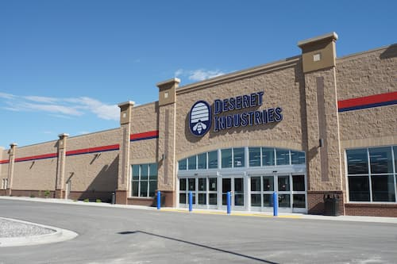

About

DI is an organization owned by The Church Of Jesus Christ Of Latter-Day Saints. DI helps people improve thier lives through work, training, and education, and sells low cost goods. It was established in 1938 to be a job training facility, deseret means “honey bee” (Ether 2:3). The honeybee represents hard work, productivity, and collaboration. In 1938, Heber J. Grant—President of The Church of Jesus Christ of Latter-day Saints—established Deseret Industries to help members of the Church and others in the community. In an editorial following the dedication of the first Deseret Industries location, Elder John A. Widtsoe—an Apostle of the Church—identified four guiding purposes (“Editorial: Deseret Industries,” Improvement Era, Sept. 1938, 544): Those who have will be given another type of opportunity to help those who have not. Waste will be reduced by keeping our possessions in use as long as possible. The work will employ many now unemployed. Articles in common use, of good quality, will be available at a low cost. The Quorum of the Twelve and Presiding Bishopric encouraged members of local Latter-day Saint congregations to donate items like clothing, furniture, electrical fixtures, metal, and glassware. These items would be sorted, processed, and repaired by men and women employed by Deseret Industries. The items would also be sold to community members at a minimum cost. Deseret Industries has approximately 1.9k employees as of May 2025. The average annual salary for employees in the United States is $68,235. Items sold at Deseret Industries: When you shop at Deseret Industries, you will find thousands of items awaiting a new home. Better yet, the retail floor is updated regularly, which means the selection is ever-changing and always fresh. There are eight main areas of the store to explore: Clothing, Shoes, Household goods, Home furnishings, Collectibles, Books, Electronics, and Yard.
Contact
To contact Deseret Industries, you can call them at (208) 524-3300. They are located at 2885 E 17th St, Ammon, Idaho, 83406, United States. If you want to apply for a job, you can contact Deseret Manufacturing by calling 801-240-2580.